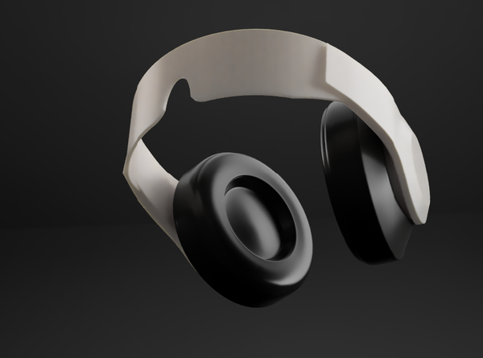
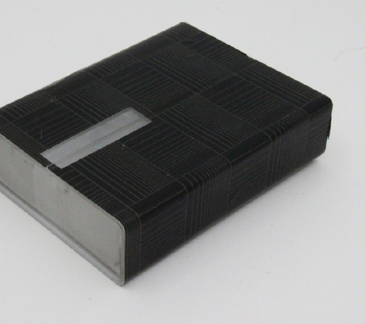
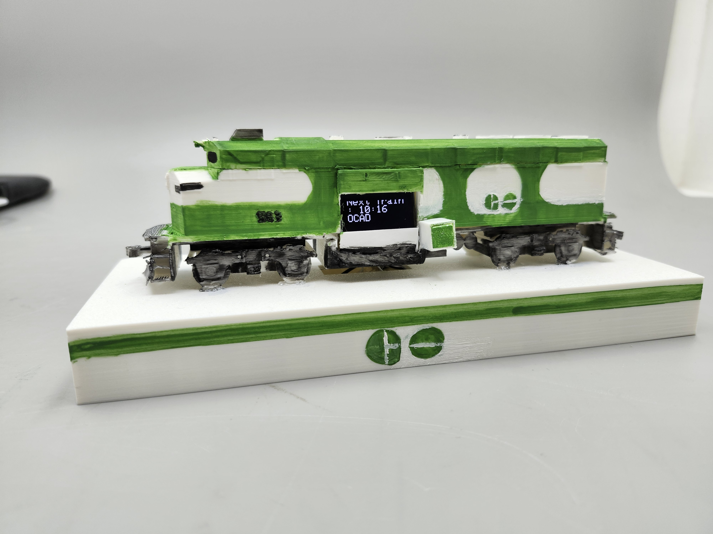
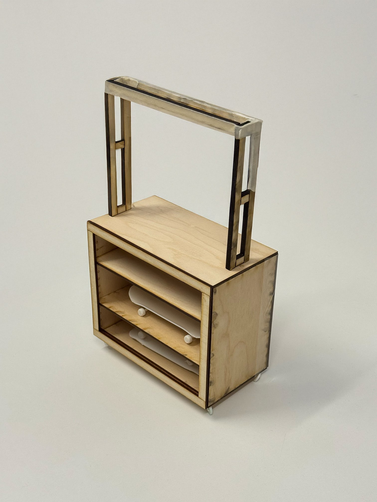
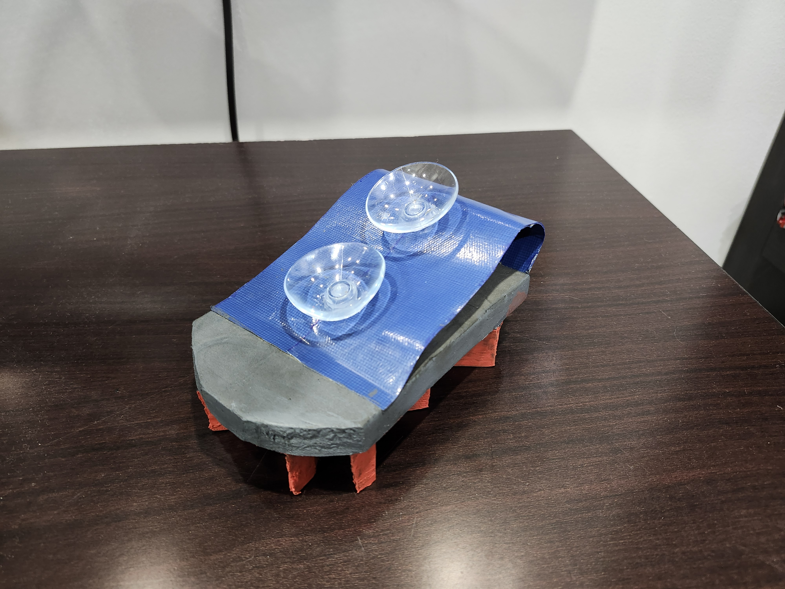

Hero project
OstrichEyes
A speculative privacy headset, onboarding app, and animated HUD overlay for a fully task-based future.
Concept
Speculative design
UI/motion design

Chinatown Bike Ring
A site-specific bike ring: koi, Chinese-knot, and Feng Shui money-frog motifs cut into weathering steel.
Prototype
Metal fabrication
Orthographic CAD

ShellSafe Pill Container
A discreet, touch-activated pill container that removes the stigma, and the guesswork, from a daily routine.
Prototype
HCD interviews
Fabrication

GO Transit Tracker
A keychain-scale locomotive that tells you exactly when the next GO train leaves, live.
Prototype
Arduino
Live API integration

OSF Display & Storage Cart
A wheeled, lockable display cart co-designed with the skateboarding students who'd push it around.
Prototype
Participatory co-design
Design for manufacturability

The Dugout: Bluejays Garden
A pitched conservation garden and community hub for Toronto's Quayside waterfront.
Concept
Service blueprinting
Resident interviews

SCRUFFY
A sponge-and-brush hybrid that re-sharpens a worn sponge mid-scrub.
Concept
SCAMPER ideation
Human-factors testing